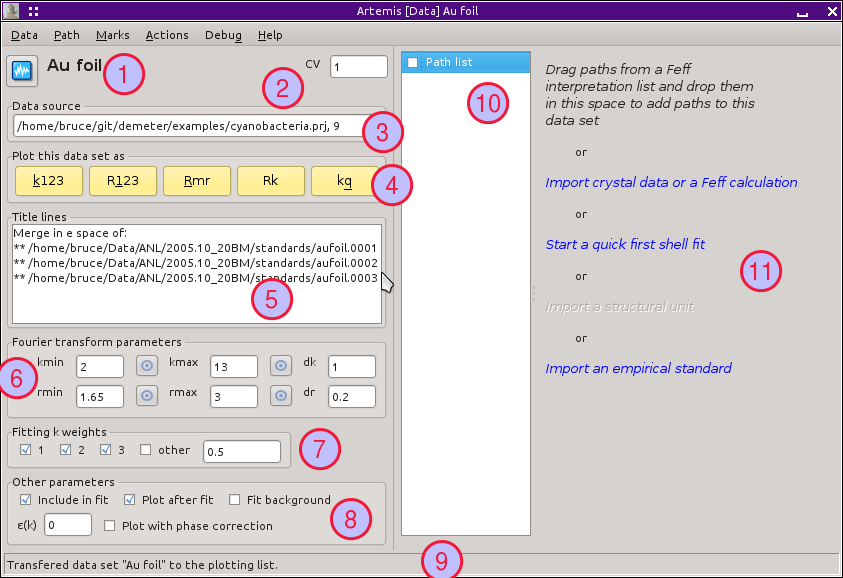
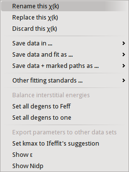

Home
Introduction
Starting Artemis
The Data window
The Atoms/Feff window
The Path page
The GDS window
Running a fit
The Log & Journal windows
The History window
Monitoring things
Managing preferences
After importing data from an ATHENA project file, several things happen:
Here is the Plot window as it initially appears:
ARTEMIS data window. ">After one or more paths have been associated with this data set, the Data window looks something like this. Note that the paths list is populated with the paths assigned to these data and that the right hand side of the Data window displays the details about a particular path. Clicking on an item in the paths list causes that path to be displayed on the right.
Note that each path in the path list has a check button associated with it. These check buttons are involved in much of the functionality described below.
Some vocabulary: The highlighted path is displayed on the right and is said to be selected. When a paths check button is checked, it is said to be marked. In this example, the first path is selected and no paths have yet been marked.

|
This is the “k123” plot. It shows the data and fit as χ(k) . Each k-weighting from 1 to 3 is shown. The data with k-weighting of 2 is plotted normally. The other two k-weightings are scaled by the appropriate number such that all three k-weighting appear to be about the same size in the plot. The Fourier transform window function is drawn over the k-weight of 1 spectrum. |

|
|
This is the “k123” plot. It shows the data and fit as χ(R) . The Fourier transform has been done with each k-weighting from 1 to 3. The data with k-weighting of 2 is plotted normally. The other two k-weightings are scaled by the appropriate number such that all three k-weighting appear to be about the same size in the plot. The back-Fourier transform window function is drawn over the k-weight of 1 spectrum to indicate the range over which the fit was evaluated (assuming the fit space is R, as is the default). |

|
|
The “Rmr” plot is the default plot displayed after a fit. It shows the magnitude and real part of χ(R) using the value of k-weighting selected in the Plot window. The back-Fourier transform window function is drawn over the magnitude spectrum to indicate the range over which the fit was evaluated (assuming the fit space is R, as is the default). The radio button in the Plot window for selecting the part of χ(R) is respected when this plot is made. |

|

|
The “Rk” plot is a stacked plot with the “Rmr” on the bottom and χ(k) on the top. The value of k-weighting selected in the Plot window is used. Fourier transform windows are drawn over the χ(k) and |χ(R)| spectra. |
|
The “kq” plot shows the data and fit as χ(k) and χ(q) . The value of k-weighting selected in the Plot window is used. The Fourier transform windows are drawn over the χ(k) spectra. |

|
|
|
 |
|
|

|
|
Much of ARTEMIS' functionality revolves around groups of marked paths. This menu contains a number of shortcuts for marking paths. Note that each of these has a keyboard shortcut given on the right side of the menu. Learning the shortcuts for marking functions that you use frequently is key to the effective use of ARTEMIS. Marking via these functions is cumulative. That is, most of them only add to the set of marked paths. Choosing to mark, say, all single scattering paths will not unmark any multiple scattering paths. Several of these functions will post a dialog for receiving input. Marking by regular expression (regex) will prompt for a perl-style regular expression to match against the labels in the path list. Marking bath greater than or less than an R value will prompt for that R value. Marking before or after the current path will mark those above or below the displayed path in the path list. Included and excluded refers to whether a path is selected as being included in a fit. Importance refers to the heuristic importance of the path, which is represented by the green (high), yellow (medium), or gray (low) color of the label at the top of the path page. |

|
|
Every item in this menu operates on the set of marked paths. Again, keyboard shortcuts are given in the menu. The first option will be explained in the chapter on .... The second option will transfer all marked paths to the plotting list in the Plot window. The next two options will cause the set of marked paths to be included in or excluded from the fit. The next item causes all marked paths to be discarded from your fitting project and removed from the path list. The final two items are about controlling what gets transferred into the plotting list after a fit. The next to last item causes all marked paths to be transferred. The last item removes all paths from the list of things transferred |

|
|
This menu displays various dialog boxes showing aspects of the current state if IFEFFIT or ARTEMIS. These are mostly used for debugging purposes. |

|